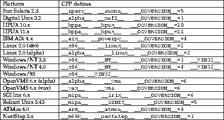

OmniORB2 is an Object Request Broker (ORB) that implements the 2.0
specification of the Common Object Request Broker Architecture
(CORBA) [OMG96a] .
This user guide tells you how to use omniORB2 to develop CORBA applications.
It assumes a basic understanding of CORBA.
.
This user guide tells you how to use omniORB2 to develop CORBA applications.
It assumes a basic understanding of CORBA.
In this chapter, we give an overview of the main features of omniORB2 and what you need to do to setup your environment to run omniORB2.
OmniORB2 implements the Internet Inter-ORB Protocol (IIOP). This protocol provides omniORB2 the means of achieving interoperability with the ORBs implemented by other vendors. In fact, this is the native protocol used by omniORB2 for the communication amongst its objects residing in different address spaces. Moreover, the IDL to C++ language mapping provided by omniORB2 conforms to the latest revision of the CORBA specification. Type Any and TypeCode are now supported (introduced in version 2.5.0). DynAny is supported since 2.6.0. The Dynamic Invocation Interface and Dynamic Skeleton Interface are supported since 2.7.0.
OmniORB2 is fully multithreaded. To achieve low IIOP call overhead, unnecessary call-multiplexing is eliminated. At any time, there is at most one call in-flight in each communication channel between two address spaces. To do so without limiting the level of concurrency, new channels connecting the two address spaces are created on demand and cached when there are more concurrent calls in progress. Each channel is served by a dedicated thread. This arrangement provides maximal concurrency and eliminates any thread switching in either of the address spaces to process a call. Furthermore, to maximise the throughput in processing large call arguments, large data elements are sent as soon as they are processed while the other arguments are being marshalled.
At AT&T Laboratories, the ability to target a single source tree to multiple platforms is very important. This is difficult to achieve if the IDL to C++ mapping for these platforms are different. We avoid this problem by making sure that only one IDL to C++ mapping is used. We run several flavours of Unices, Windows NT, Windows 95 and our in-house developed systems for our own hardware. OmniORB2 have been ported to all these platforms. The IDL to C++ mapping for these targets are all the same.
OmniORB2 uses real C++ exceptions and nested classes. We stay with the CORBA specification's standard mapping as much as possible and do not use the alternative mappings for C++ dialects. The only exception is the mapping of modules.
Starting with 2.6.0, the code generated by the IDL compiler of omniORB2 can be compiled using C++ classes or namespaces to represent IDL modules depending on the availability of namespace support in the compiler.
OmniORB2 relies on the native thread libraries to provide the multithreading capability. A small class library (omnithread [Richardson96a]) is used to encapsulated the (possibly different) APIs of the native thread libraries. In the application code, it is recommended but not mandatory to use this class library for thread management. It should be easy to port omnithread to any platform that either supports the POSIX thread standard or has a thread package that supports similar capabilities.
OmniORB2 is not (yet) a complete implementation of the CORBA core. The following is a list of the missing features.
These features may be implemented in the short to medium term. It is best to check out the latest status on the omniORB2 home page ( http://www.uk.research.att.com/omniORB/omniORB.html).
At AT&T Laboratories Cambridge, you should use the OMNI Development Environment (ODE) [Richardson96b] and the OMNI tree version 5.0 or above to compile your programs. If this is the case, there is no extra setup you have to do other than those described in the ODE documentation.
If you are running omniORB2 at other sites, you (or your system administrator) should install omniORB2 by following the instructions in the installation notes.
 SOFTWARE
SOFTWARE ORL
ORL omniORB
omniORB 2.0
2.0
The configuration file is used to obtain an object reference for the COSS Naming Service. The entry in the configuration file should be specified in the following form:
NAMESERVICE <stringified IOR for the COSS Naming Service>
Comments in the configuration file should be prefixed with a #.
On Win32 platforms, the stringified IOR can be placed in the system registry,
in the (string) value NAMESERVICE, under the key
HKEY_LOCAL_MACHINE SOFTWARE
SOFTWARE ORL
ORL omniORB
omniORB 2.0.
2.0.
Since 2.6.0, two other entries are supported:
ORBInitialHost <hostname string> ORBInitialPort <port number (1-65535)>
The corresponding entries under the Win32 system registry is the key with name ORBInitialHost and ORBInitialPort.
The two entries provide information to the ORB to locate a bootstrap service at runtime. The bootstrap service is able to return the initial object reference for the COSS Naming Service and others. This is now the recommended way to configure omniORB2. More details are provided in section 4.6.
To compile omniORB2 programs correctly, several C++ preprocessor defines must be specified to identify the target platform.

The preprocessor defines for new platform ports not listed above can be found in the corresponding platform configuration files. For instance, the platform configuration file for Sun Solaris 2.6 is in mk/platforms/sun4_sosV_5.6.mk. The preprocess defines to identify a platform is the value of the make variable IMPORT_CPPFLAGS.
In a single source multi-target environment, you can put the preprocessor defines as the command-line arguments for the compiler. Alternately, you could create a sitedef.h file in the same directory as omniORB2/CORBA.h. Write into the file the appropriate set of preprocessor defines and add #include <omniORB2/sitedef.h> at the beginning of omniORB2/CORBA_sysdep.h.